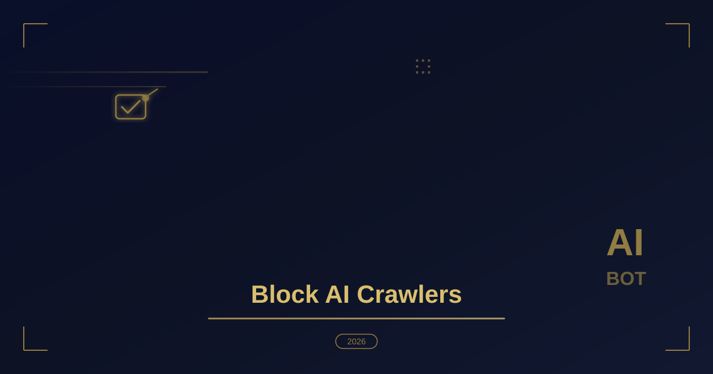

How to Block AI Crawlers from Scraping WordPress Content
Table of Contents
- Why AI Crawlers Are a Growing Concern for WordPress Owners
- Identify Which AI Crawlers Are Hitting Your Site
- Method 1: Block AI Crawlers with robots.txt
- Method 2: Block AI Crawlers in .htaccess (Apache)
- Method 3: Use a Security Plugin Firewall
- Method 4: Serve the robots.txt Meta Tag Dynamically
- Method 5: Rate Limiting and Challenge Pages
- What NOT to Block (and Why)
- Verify Your Blocking Is Working
- Best Practices for Long-Term AI Crawler Management
- Conclusion
- Frequently Asked Questions
Why AI Crawlers Are a Growing Concern for WordPress Owners
Over the past two years, artificial intelligence companies have deployed a new generation of web crawlers to harvest massive volumes of content for training large language models. Unlike traditional search engine bots such as Googlebot or Bingbot, AI crawlers like GPTBot, CCBot, ClaudeBot and Bytespider do not send traffic back to your website. They ingest your articles, documentation, and product descriptions, then use that material to power chatbots that can answer the same questions without ever visiting your site.
For content creators, agencies and businesses that rely on organic search, this is a real problem. Studies from 2025 and 2026 show that AI overviews in search results can reduce click-through rates by 30 to 50 percent for informational queries. When your content is also being scraped directly, you lose both the traffic and the attribution. In this guide I will walk you through the exact methods I use to block AI crawlers from WordPress installations, from the simplest robots.txt rules all the way to server-level firewall rules.
Identify Which AI Crawlers Are Hitting Your Site
Before you block anything, you need to know who is knocking. The most common AI crawlers in 2026 include:
- GPTBot — OpenAI's official crawler for training data collection.
- OAI-SearchBot — OpenAI's search indexing bot (separate from GPTBot).
- CCBot — Common Crawl's aggregator used by many AI labs.
- ClaudeBot — Anthropic's web crawler for Claude model training.
- anthropic-ai — Another Anthropic user agent seen in server logs.
- Google-Extended — Controls whether Google may use your content for Gemini training, separate from Search indexing.
- Bytespider — ByteDance's crawler, associated with Doubao and other models.
- PerplexityBot — Perplexity AI's indexing crawler.
- Amazonbot — Amazon's crawler, linked to Alexa and Rufus AI.
The easiest way to spot them is in your server access logs or in a security plugin's firewall log. Look for user-agent strings containing the names above. If you are on shared hosting, ask your host for a recent access log sample, or install a lightweight logging plugin such as a caching plugin with bot logging to capture the data over a week.
Method 1: Block AI Crawlers with robots.txt
The simplest and most universal approach is editing your robots.txt file. In WordPress this file lives at the root of your installation, but the built-in editor only exposes a small subset. I recommend using a plugin like Yoast SEO or Rank Math, which let you append custom rules, or editing the file directly via FTP/SFTP.
Add the following rules to block the major AI crawlers:
# Block AI training crawlers
User-agent: GPTBot
Disallow: /
User-agent: CCBot
Disallow: /
User-agent: ClaudeBot
Disallow: /
User-agent: anthropic-ai
Disallow: /
User-agent: Google-Extended
Disallow: /
User-agent: Bytespider
Disallow: /
User-agent: PerplexityBot
Disallow: /
User-agent: Amazonbot
Disallow: /
# Keep OAI-SearchBot allowed if you want ChatGPT search visibility
# User-agent: OAI-SearchBot
# Disallow: /
One important nuance: blocking GPTBot does not remove your site from ChatGPT's search feature. OpenAI uses OAI-SearchBot for search indexing and GPTBot for training data. If you want to appear in ChatGPT search results but not have your content used for training, allow OAI-SearchBot and block GPTBot only. The same distinction applies to Google: Googlebot powers Search, while Google-Extended controls Gemini training.
Keep in mind that robots.txt is a voluntary compliance mechanism. Malicious scrapers ignore it entirely. That is why you need server-level enforcement as well. Layering security headers on top of these rules gives browsers and CDNs one more enforcement point beyond user-agent checks alone.
Method 2: Block AI Crawlers in .htaccess (Apache)
For Apache hosts (which cover a large share of WordPress installations), you can enforce the block at the server level using .htaccess. Add these rules inside your site's .htaccess file, typically located in the public_html directory:
<IfModule mod_rewrite.c>
RewriteEngine On
# Block known AI crawlers by User-Agent
RewriteCond %{HTTP_USER_AGENT} (GPTBot|CCBot|ClaudeBot|anthropic-ai|Google-Extended|Bytespider|PerplexityBot|Amazonbot|Meta-ExternalAgent) [NC]
RewriteRule .* - [F,L]
</IfModule>
The [F] flag returns a 403 Forbidden response, and [L] stops further rule processing. This is more robust than robots.txt because the crawler never receives the page content at all. If your host uses Nginx instead of Apache, the equivalent approach uses a map block in your server configuration:
map $http_user_agent $bad_bot {
default 0;
~*(GPTBot|CCBot|ClaudeBot|anthropic-ai|Google-Extended|Bytespider|PerplexityBot|Amazonbot) 1;
}
server {
...
if ($bad_bot) {
return 403;
}
...
}
Nginx configuration changes usually require host support, since most managed WordPress hosts do not give you direct access to the server config. In that case, method 1 plus method 3 is your best combination.
Method 3: Use a Security Plugin Firewall
If you prefer not to touch code, several WordPress security plugins now include dedicated AI crawler blocking features. Here is a quick comparison:
- Wordfence — The firewall lets you create custom user-agent rules in the premium tier, and the free version already blocks many known bad bots.
- Sucuri — Their cloud firewall filters AI bots before requests even reach your server, which is ideal for high-traffic sites.
- Cloudflare — Not a WordPress plugin per se, but Cloudflare's WAF includes pre-built rules for GPTBot, CCBot and others. The free plan supports custom firewall rules as well.
- WP Ghost (formerly Hide My WP) — Includes a bot-blocking module with AI crawler signatures built in.
For most of my client projects I recommend a Cloudflare WAF rule combined with the robots.txt rules above. Cloudflare's free plan already proxies your DNS, so adding a firewall rule takes less than five minutes and offloads the filtering from your origin server.
Method 4: Serve the robots.txt Meta Tag Dynamically
If you cannot edit robots.txt directly, WordPress can output the meta tag equivalent from your theme's header. Add this to your header.php or via a snippets plugin:
<!-- AI crawler blocking meta directives -->
<meta name="robots" content="index, follow, noarchive, nosnippet">
The nosnippet directive prevents search engines and AI systems from displaying cached excerpts of your content in their results. The noarchive directive prevents cached copies. These are respected by Google and increasingly by AI systems that honor the robots meta specification.
Blocking AI crawlers is not about hiding your content from the world — it is about making sure that when your content is used, it is used with your permission and drives traffic back to your site.
Method 5: Rate Limiting and Challenge Pages
For sites that attract aggressive scraping regardless of user-agent, rate limiting is the next layer. Cloudflare lets you create rate-limiting rules per path. For example, you might limit any IP to 60 requests per minute on your /blog/ directory. IPs that exceed the threshold receive a challenge page (JS challenge or managed challenge), which most AI scrapers fail to solve.
Here is a simple Cloudflare rule outline:
- When: URI Path contains
/blog/AND Requests per minute > 60 - Action: Managed Challenge
- Length: 10 minutes
This does not specifically target AI bots, but it is highly effective against them because they rarely execute JavaScript. Combined with user-agent blocking, it creates two independent layers of defense.
What NOT to Block (and Why)
Not every AI-related bot should be blocked. Here is my recommended policy for most WordPress sites:
| Bot | Purpose | Recommendation |
|---|---|---|
| Googlebot | Google Search indexing | Always allow |
| Bingbot | Bing Search indexing | Always allow |
| OAI-SearchBot | ChatGPT search results | Allow if you want ChatGPT visibility |
| PerplexityBot | Perplexity AI answers | Allow if you want Perplexity visibility |
| GPTBot | OpenAI model training | Block |
| CCBot | Common Crawl dataset | Block |
| ClaudeBot | Anthropic training | Block |
| Google-Extended | Gemini training | Block (Search still works) |
The key principle: allow bots that send you traffic, block bots that only consume. Search-oriented AI bots like OAI-SearchBot and PerplexityBot cite sources and drive referral visits. Training-oriented bots like GPTBot and CCBot take your content with no reciprocal benefit.
Verify Your Blocking Is Working
After implementing any of the methods above, test them. The quickest check is running a user-agent simulation from your terminal:
curl -A "GPTBot" -I https://yourdomain.com/
# Expected: HTTP/1.1 403 Forbidden
curl -A "Googlebot" -I https://yourdomain.com/
# Expected: HTTP/1.1 200 OK
If GPTBot returns 403 and Googlebot returns 200, your rules are working correctly. You can also monitor your Cloudflare or hosting firewall logs over the next few days to confirm the blocked user agents no longer appear with successful responses.
Best Practices for Long-Term AI Crawler Management
AI crawler lists evolve quickly. New bots appear every few months, and user-agent strings change. Here is how I keep client sites protected over time:
- Review quarterly. Set a calendar reminder every three months to check whether new AI crawlers have been added to public blocklists such as the ai-robots-txt repository on GitHub.
- Keep Googlebot and Bingbot unblocked. It is surprisingly common to accidentally block legitimate search bots with overly broad rules. Always test with curl after any change.
- Combine layers. robots.txt alone is not enough. Use at least two methods from this guide for meaningful protection.
- Document your policy. If you run a multi-author site or an agency portfolio, write down which bots you block and why, so future developers do not undo your work.
- Stay current with legal developments. Several jurisdictions including the EU and parts of the US are introducing legislation around AI training data and opt-out mechanisms. The technical controls in this guide complement whatever legal frameworks emerge.
Conclusion
AI crawlers are not going away. As large language models continue to expand, the pressure on your content will only increase. The good news is that WordPress gives you multiple effective tools to control what gets scraped: robots.txt for voluntary compliance, .htaccess and Nginx rules for hard enforcement, security plugin firewalls for managed protection, and Cloudflare WAF for edge-level filtering.
The recommended starting point for most site owners is simple: add the robots.txt rules from method 1 today, then set up a Cloudflare firewall rule this week. That combination blocks the majority of AI training crawlers with minimal effort and zero impact on your search rankings.
If you need help implementing any of these methods on your WordPress site, or if you are planning a larger security hardening project, feel free to reach out to me directly. I have implemented these exact configurations on dozens of production WordPress installations for clients worldwide.
Frequently Asked Questions
Which AI crawlers should I block on my WordPress site?
GPTBot, CCBot, ClaudeBot, and Bytespider are the training and scraping bots that take content without sending traffic back. The guide is explicit about what not to block: Googlebot, Bingbot, and other search engine user agents must stay allowed or you will drop out of search results. Block based on user agent at the server or firewall layer, not by guessing from referrer data.
Will blocking AI crawlers hurt my SEO?
Blocking AI training crawlers does not remove your site from search results, because those bots are not the ones that build the search index. The real risk is over-blocking: a wildcard rule that also matches Googlebot or Bingbot will cost you rankings. Test each rule against known search bot user agents before deploying it.
How do I verify that my blocking rules work?
The verification section walks through checking your live robots.txt file, then confirming that requests using the blocked user agents receive a 403 or never appear in your server and CDN logs. Cloudflare and most security plugins show bot analytics you can filter by user agent. Recheck after any firewall or plugin update, since rules are easy to overwrite silently.
Is editing robots.txt enough to stop AI scrapers?
No. robots.txt is advisory: honest bots read it, but a scraper can ignore it completely. The guide's recommended starting point is robots.txt for compliant bots plus a Cloudflare firewall rule that actively challenges or blocks the rest. For stubborn traffic, add rate limiting and challenge pages as a second layer.